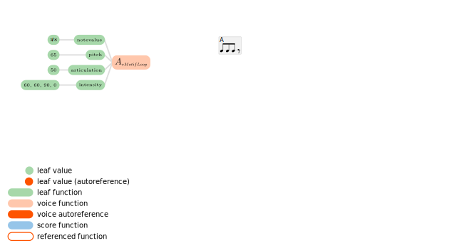
1. Creates basic rhythmic motif A.
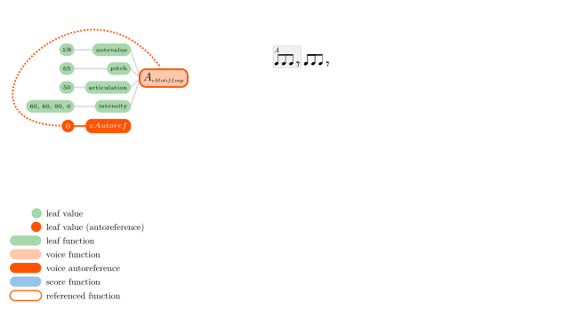
2. Autoreference to previous motif A.
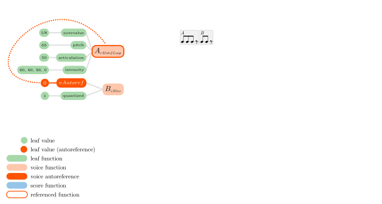
3. Slices the first event of referenced motif A to create motif B.
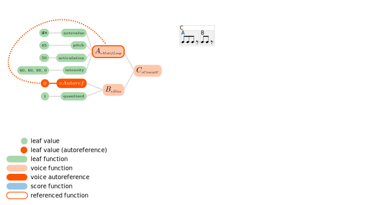
4. Joins motifs A and B, creating motif C.
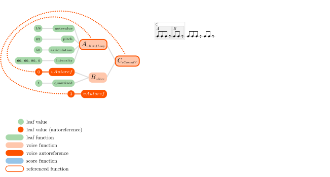
5. Autoreference to motif C.
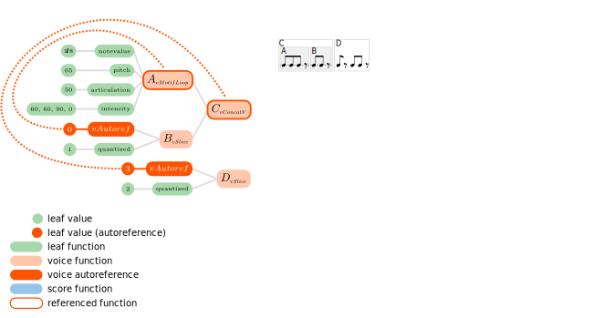
6. Slices the two first events of referenced motif C to create motif D.

7. Joins motifs C and D to create E, the core theme of the piece.
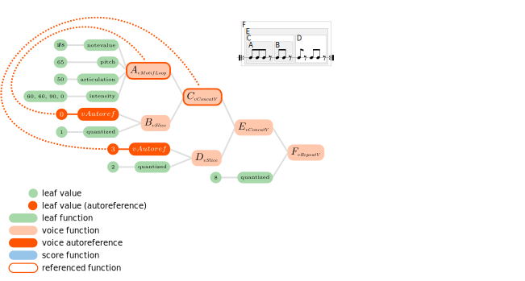
8. Repeats theme E eight times to create block G.
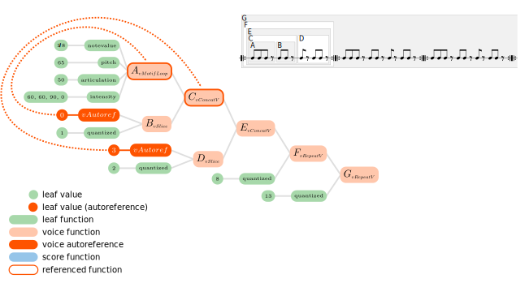
9. Repeats block G thirteen times to complete the first voice of the piece.
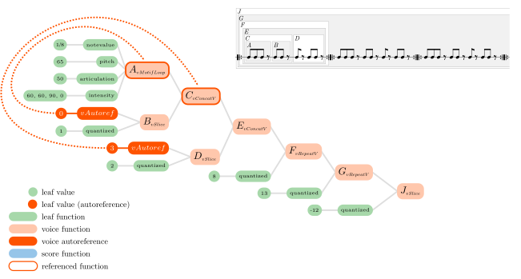
10. Slices the last repetition of theme E to compensate the periodical slices that will occur on the second voice.
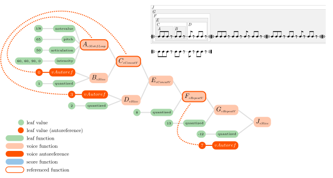
11. Starting the second voice with an autoreference to block G (theme E repeated 8 times).
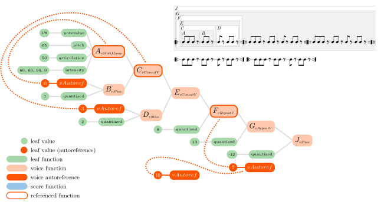
12. Another autoreference to the last autoreference.
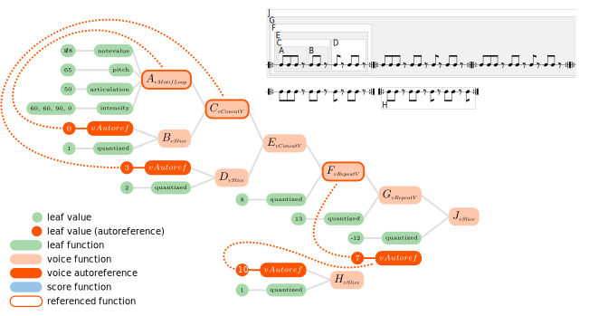
13. Creates block H by slicing the first event of this big block, so each eicht repetitions of theme E will begin on the second event. That is the key fact of the piece, which eventually produces the out of phase effect.
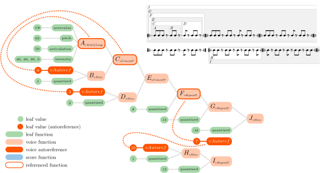
14. Repeats block H twelve times to create block I.
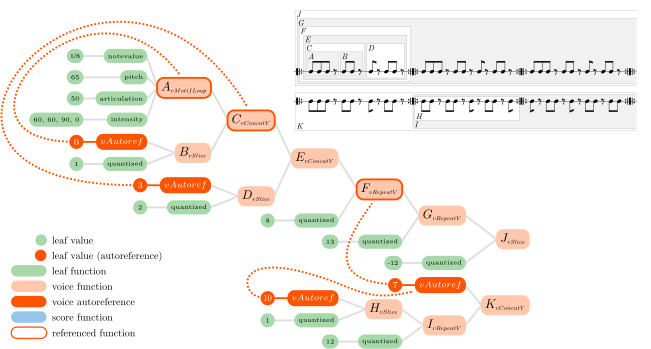
15. Completes second voice of the piece by joining the first eight repetitions of theme E with block I.
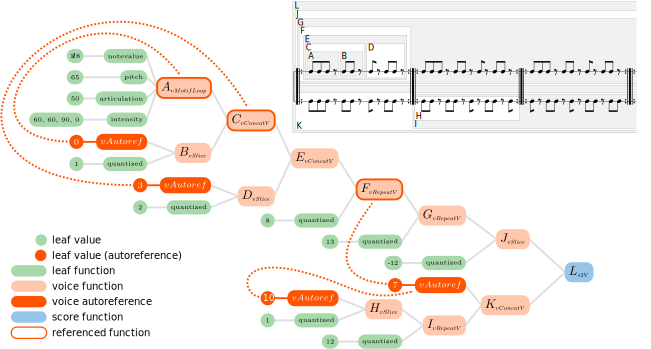
❮
❯
16. Score function which unites both voices, recreating the complete composition.